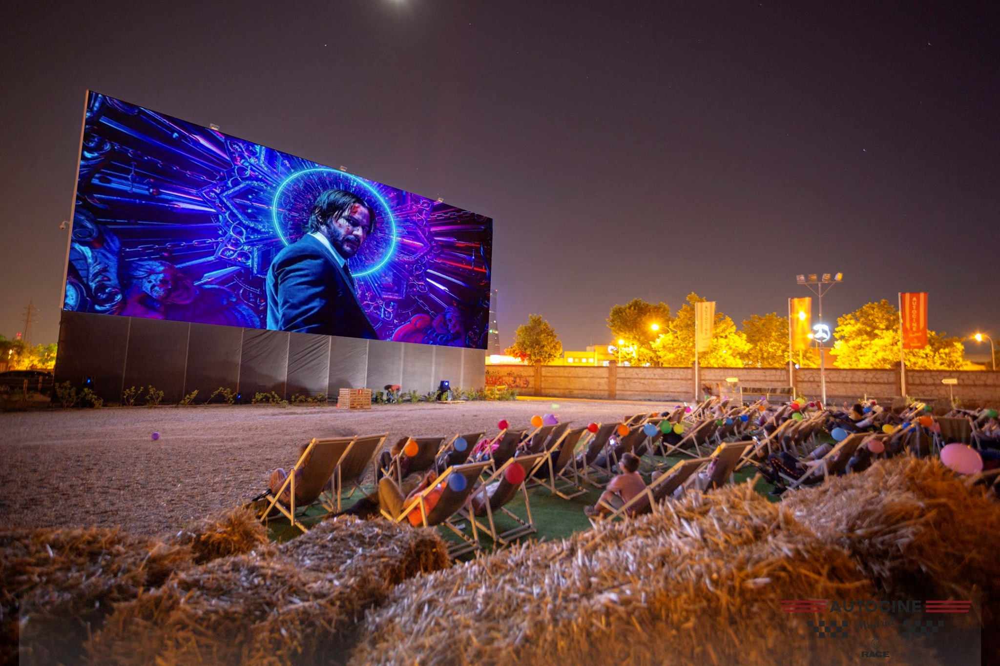

La magia del cine al aire libre
El cine de verano es una apuesta segura y de éxito. La proyección de películas al aire libre es uno de los planes preferidos para esos días largos y calurosos del verano. Se trata de un plan barato, fresco y divertido. El cine de verano es una manera inolvidable de pasar y compartir un buen rato con tus seres más queridos. Otra opción muy deseada es el autocine.
¿Lo mejor? Que se trata de un plan para todas las edades. No importa si tienes 20, 30, 40, o 50 años. Lo bonito de este tipo de cine al aire libre es que puedes disfrutarlo con padres, abuelos, hijos, primos, amigos.. Te podemos asegurar que con el paso de los años lo recordarás como el plan más divertido de cada verano.
Revisa la cartelera, elige la película que más te guste: infantil, romántica, familiar, de miedo, de acción… y disfruta del cine en un entorno único.
Alquiler de equipos para la proyección de películas
En Animaciones y Eventos la Fábrica disponemos de equipos audiovisuales especializados para realizar este servicio. Te ayudamos a crear un evento especial en tu localidad donde reunir a los amantes del cine. Nuestros equipos especializados de proyección, sonido y pantalla se adaptan al espacio disponible y a la luminosidad del mismo.
¿Para quién está pensado este servicio? Este servicio de cine al aire libre es ideal para Ayuntamientos, Diputaciones, Casas de cultura, Centros educativos, Empresas Privadas…
